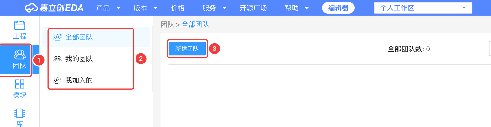
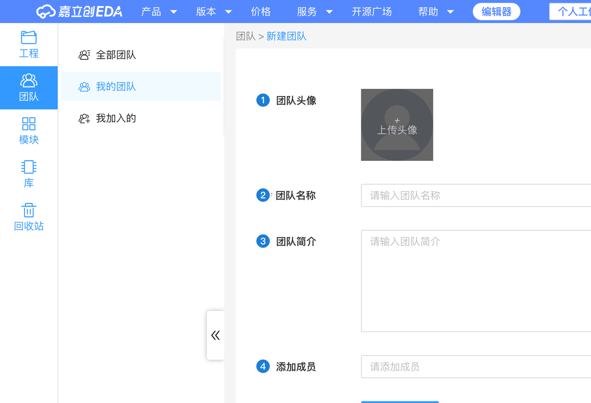

3.3 团队协作与开源
一个人做板子用个人工作区就够了；和同学组队做比赛、课程设计时，用团队工作区共享工程。做好了还可以发布到立创开源硬件平台，也能从那里“抄作业”。
工作区与团队#
个人工作区和团队工作区#
嘉立创EDA 里的工程分两种“地盘”：
- 个人工作区：只有你自己能看到和编辑。本教程所有工程都在这里。
- 团队工作区：属于某个团队，团队成员按权限都能看到、编辑。
建团队、邀请成员#
团队在网页版个人中心里管理（编辑器右上角头像 → 个人中心，或直接打开 u.lceda.cn）：


- 新建团队，起个名字（比如“电子设计大赛-3 组”）
- 在团队管理页邀请成员（通过账号 / 链接，以页面为准），给每个人设置权限
- 回到编辑器，右上角切换到这个团队的工作区，在里面新建工程，大家就都能打开了
- 个人工程也可以移动到团队里（工程的右键菜单 / 网页工程列表里操作）
和版本控制配合#
团队协作时，版本控制更有用：每个人在自己的分支上改，改好了再决定合到 main。改之前先创建节点，出问题随时回退。
开源与分享：立创开源硬件平台#
oshwhub.com 是嘉立创的开源硬件社区，上面有大量别人公开的完整工程：开发板、小车、键盘、无人机……每个工程一般都有原理图、PCB、BOM、照片和说明。对新手来说，这是最好的“参考答案库”。
从开源平台学习（“抄作业”）#
- 在开源广场搜你感兴趣的东西，比如 “ESP32-C3”“555”“Type-C 供电”
- 打开工程页，可以在线预览原理图、PCB、3D
- 工程页上一般有在编辑器中打开 / 复制工程到自己工作区的按钮（以页面实际按钮为准），复制后就能随便改
- 重点学：别人的电源部分怎么画、元件怎么摆、线怎么走、丝印怎么写
发布自己的作品#
- 先把工程整理好：原理图清楚、DRC 通过、丝印写上名字和版本
- 在开源平台点「发作品」（或从编辑器的工程菜单发布，以界面为准），选择要发布的工程
- 写好介绍：做了什么、怎么用、实物照片、注意事项；选择开源协议
- 提交后平台会审核，通过后公开（平台首页有《工程发布流程》和《工程审核标准》说明）